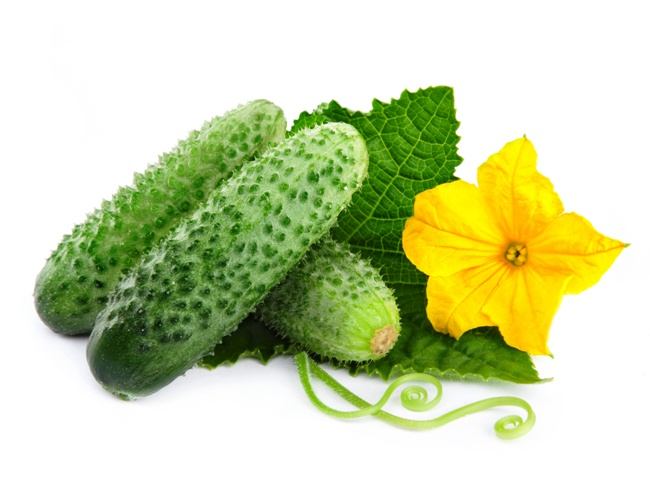
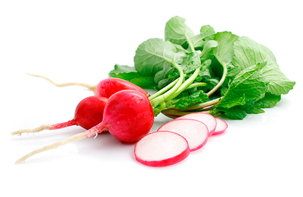
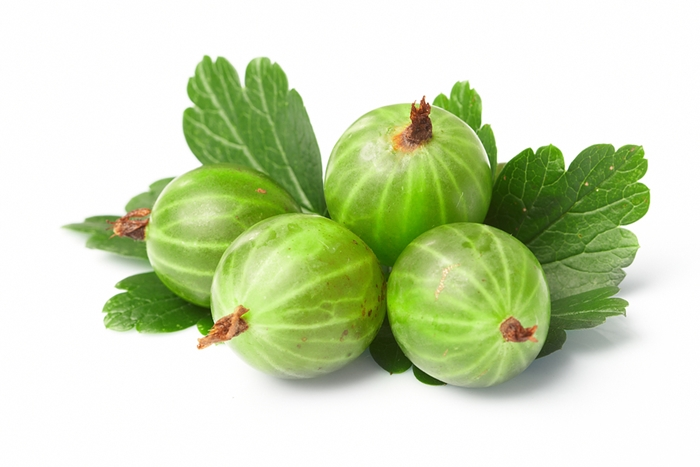
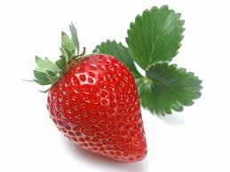
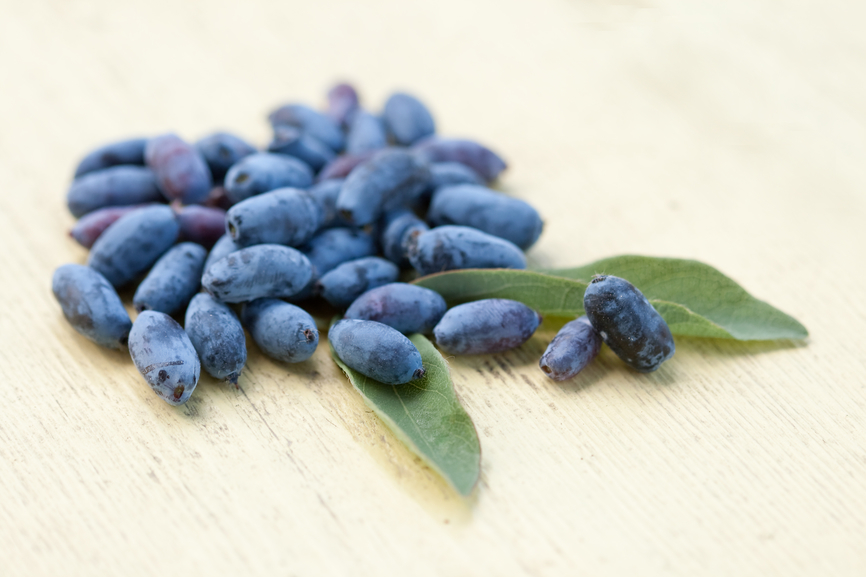
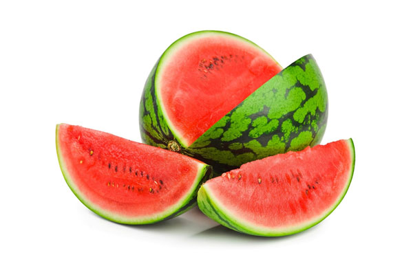

Занимает первое место среди
позднеспелых гибридов, которые
предназначены для употребления
в незамороженном виде в конце
зимы. Не утрачивают своих качеств
после хранения сроком до 7–9 месяцев.
Кочаны достигают массы в 5 кг,
плотные, круглой формы. Имеют
беловатую окраску на срезе.
Данный сорт в основном дает отличный
урожай высокого качества. Один из
самых устойчивых к заболеваниям.
Занимает первое место среди
позднеспелых гибридов, которые
предназначены для употребления
в незамороженном виде в конце
зимы. Не утрачивают своих качеств
после хранения сроком до 7–9 месяцев.
Кочаны достигают массы в 5 кг,
плотные, круглой формы. Имеют
беловатую окраску на срезе.
Данный сорт в основном дает отличный
урожай высокого качества. Один из
самых устойчивых к заболеваниям.
 Помидор – название растения и
одноименных плодов. Название
«помидор» в переводе с
итальянского обозначает -
золотое яблоко, а слово томат
произошло от ацтекского «матль».
Родиной помидор является
Южная и Центральна Америка, где до
сих пор можно повстречать дикие формы
этой культуры.
Помидор – название растения и
одноименных плодов. Название
«помидор» в переводе с
итальянского обозначает -
золотое яблоко, а слово томат
произошло от ацтекского «матль».
Родиной помидор является
Южная и Центральна Америка, где до
сих пор можно повстречать дикие формы
этой культуры.

Достоинство огурцов — их
рекордно низкая калорийность.
Подходящий для диетических
целей овощ — почти на 95% состоит из воды
и содержит минимальное количество
калорий. Шутка ли — в килограмме
содержится всего 130 кКал. Людям,
страдающим лишним весом, свежие
огурцы можно есть почти в
неограниченном количестве

С точки зрения классификации
редис является близким
родственником редьки посевной.
Название овощной культуры
произошло от латинского слова
radix, что в переводе означает
«корень».
 Болгарский перец – замечательный
вкусный и полезный овощ, который
можно покупать и употреблять
круглогодично или же выращивать
на своем приусадебном участке.
Полезные свойства болгарского
перца помогают сохранить
здоровье, а также предупредить
и справиться со многими
заболеваниями человека.
Болгарский перец – замечательный
вкусный и полезный овощ, который
можно покупать и употреблять
круглогодично или же выращивать
на своем приусадебном участке.
Полезные свойства болгарского
перца помогают сохранить
здоровье, а также предупредить
и справиться со многими
заболеваниями человека.
 Клубень картофеля представляет
собой разросшуюся почку,
состоящую из наполненных
крахмалом клеток, снаружи
покрытую тонким слоем пробковой
ткани. На поверхности клубня
располагаются пазушные
почки, так называемые глазки,
из которых развиваются
молодые побеги. На одном клубне
в зависимости от сорта
имеется от 3 до 15 глазков, каждый
из которых содержит несколько
почек. Одна из них называется
главной и прорастает первой,
остальные остаются спящими.
Клубень картофеля представляет
собой разросшуюся почку,
состоящую из наполненных
крахмалом клеток, снаружи
покрытую тонким слоем пробковой
ткани. На поверхности клубня
располагаются пазушные
почки, так называемые глазки,
из которых развиваются
молодые побеги. На одном клубне
в зависимости от сорта
имеется от 3 до 15 глазков, каждый
из которых содержит несколько
почек. Одна из них называется
главной и прорастает первой,
остальные остаются спящими.
 Лук одно из лучших средств для борьбы с
авитаминозами в зимний и
весенний периоды. Лук
способствует нормализации
водно-солевого обмена в
организме, возбуждает
аппетит и улучшает работу
пищеварительной системы,
повышает тонус организма,
а также оказывает
мочегонное, антисептическое,
противомикробное,
бактерицидное,
противовоспалительное,
антисклеротическое и
противодиабетическое действие.
Лук одно из лучших средств для борьбы с
авитаминозами в зимний и
весенний периоды. Лук
способствует нормализации
водно-солевого обмена в
организме, возбуждает
аппетит и улучшает работу
пищеварительной системы,
повышает тонус организма,
а также оказывает
мочегонное, антисептическое,
противомикробное,
бактерицидное,
противовоспалительное,
антисклеротическое и
противодиабетическое действие.
 Она нормализует обмен веществ,
помогает при
сердечнососудистых заболеваниях,
отеках различного происхождения,
является замечательным
мочегонным средством.
В сыром виде она особенно
полезна при запорах. Её можно
использовать при приготовлении
многих блюд. Жарить, печь, мариновать.
У неё нет противопоказаний.
Однако может быть индивидуальная
непереносимость.
Она нормализует обмен веществ,
помогает при
сердечнососудистых заболеваниях,
отеках различного происхождения,
является замечательным
мочегонным средством.
В сыром виде она особенно
полезна при запорах. Её можно
использовать при приготовлении
многих блюд. Жарить, печь, мариновать.
У неё нет противопоказаний.
Однако может быть индивидуальная
непереносимость.

Ягоды крыжовника используют
в кулинарии в свежем или
консервированном виде.
Пожалуй, самое популярное и
вкусное блюдо из крыжовника –
это, так называемое,
«изумрудное» варенье. Варят из
крыжовника кисели, джемы,
делают мармелад.
Кондитеры используют
плоды для приготовления
десертов, сладких йогуртов,
мороженного, тортов и
порогов. Кислый привкус ягод
позволяет использовать
крыжовник для приготовления
мясных соусов, также их иногда
добавляют при консервации
овощей в маринад.

Для меня описание клубники
сорта Виктория всегда было
простым – листья широкие
насыщенного зеленного
цвета, кусты образует
большие и сильные. Ягода крупная,
сладкая, конечно меньше
Гигантелы, но намного
ароматнее. Плодоносит
Виктория один раз в год. Что еще можно
добавить? Варю клубнику в
собственном соку – зимой,
корда открываешь банку,
благоухание клубничное
распространяется на всю кухню.

Долговечное и морозостойкое
растение выращивается
для плодов — вкусные и полезные,
часто созревающие в наших
климатических условиях.
Плотное растение, достигает
высоты 1,2 м. Невзрачные,
бледно-жёлтые цветки, богаты
нектаром, появляются уже
в первой половине апреля.
Требуют опыления — опыления
скрещенного, поэтому
растение даёт хороший
урожай, когда растёт среди
видов растений этого же сорта.

Арбуз – фрукт без «слабых» мест: он
отличается не только
превосходными вкусовыми
качествами, но и своими
целебными свойствами